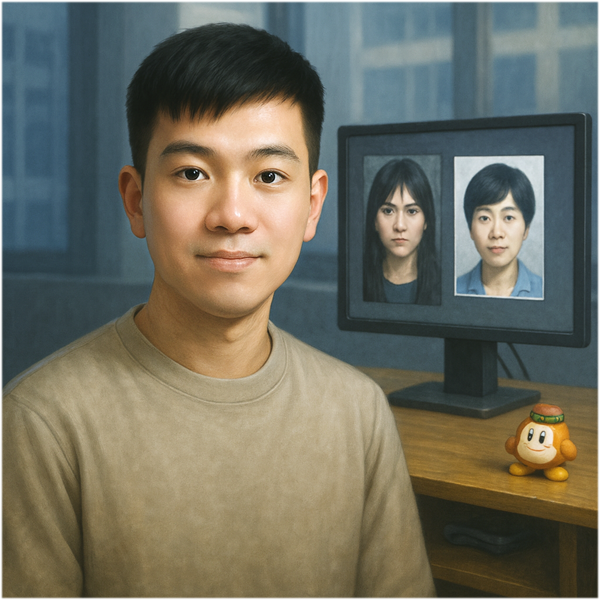

Illustration

Gender
♂️ - 男生
Goal
一位「大破防」的電子紙研究生肄業
Ability
# 神罰 -
使用四張手牌，並且宣告一種動作牌，視為發動該動能牌。若遭預判成功，則抽兩張牌。
## 神の問 -
在你的回合，詢問一位研究生的研究題目，若你詢問正確，會使對方「大破防」，並將所有手牌交給你。若詢問錯誤，則抽兩張牌。
Trivia
「神罰」不是不報只是時候未到
俗稱迴力鏢效應，說出口的每一句話，未來都會回來找你對帳。
這或許不是巧合，而是某種來自宇宙的秩序懲戒，彷彿上天不願看到某些人太過猖狂，便降下神罰。
當年，焦糖o彤兒看著倒霉蛋在屎坑裡掙扎求生，深感恐懼，於是立下鐵律 —
「絕對！不要碰電子紙，不然就會成為下一個倒霉蛋！」
這句話他幾乎天天掛嘴邊，凡是沾到「電子紙」三個字，無論是產學合作、企業獎學金還是國科會計畫，一律都閃、躲、飄～ 避得比雷還快！
然而 — 時間的齒輪持續無聲轉動
將有那麼一段時間，非你不可、捨你其誰？
所以神罰終會降臨嗎？ 拭目以待
「神の問」這個故事，起源於一次彤兒與余十三之間的深度對話
一場看似平靜，實則暗藏核彈。
身為電機所學生的余十三，長年自帶優越感加持，對於 AI 所的畢業門檻總有點不以為然，更是洋洋得意地列出一長串比較：
「AI 所學生選修課比我們少兩門、必修也少一門。
不用投稿國際研討會，也不需要寫碩士論文，只要交個產學技術報告就能爽爽畢業。
你說說看，這能一樣嗎？」
正當他滔滔不絕、自信爆表時，彤兒忽然低聲提出一句看似天真無害的提問：
「可是學長，你覺得你投稿到研討會的那篇論文，真的有比小南瓜現在做的研究還要屌嗎？」（註：小南瓜是 AI 所的學生）
空氣瞬間靜止，時間彷彿凍結。
這句看似無心的問題，卻像神之手從天而降，一擊耳光打在余十三稚嫩的學術臉龐，直擊要害。
他臉色驟變，語氣急轉：
「欸…不能這樣比啦……」
急忙解釋、努力補話，想掩飾內心深處那一瞬間的劇烈震盪。
但大家都知道，他「大破防」！！
從那以後，彷彿真被神罰警告，再也沒聽過余十三對 AI 所發表過一句輕視之言。
那一問，被後人尊稱為 — 神の問
#SoC #Master #Year112
Relationship